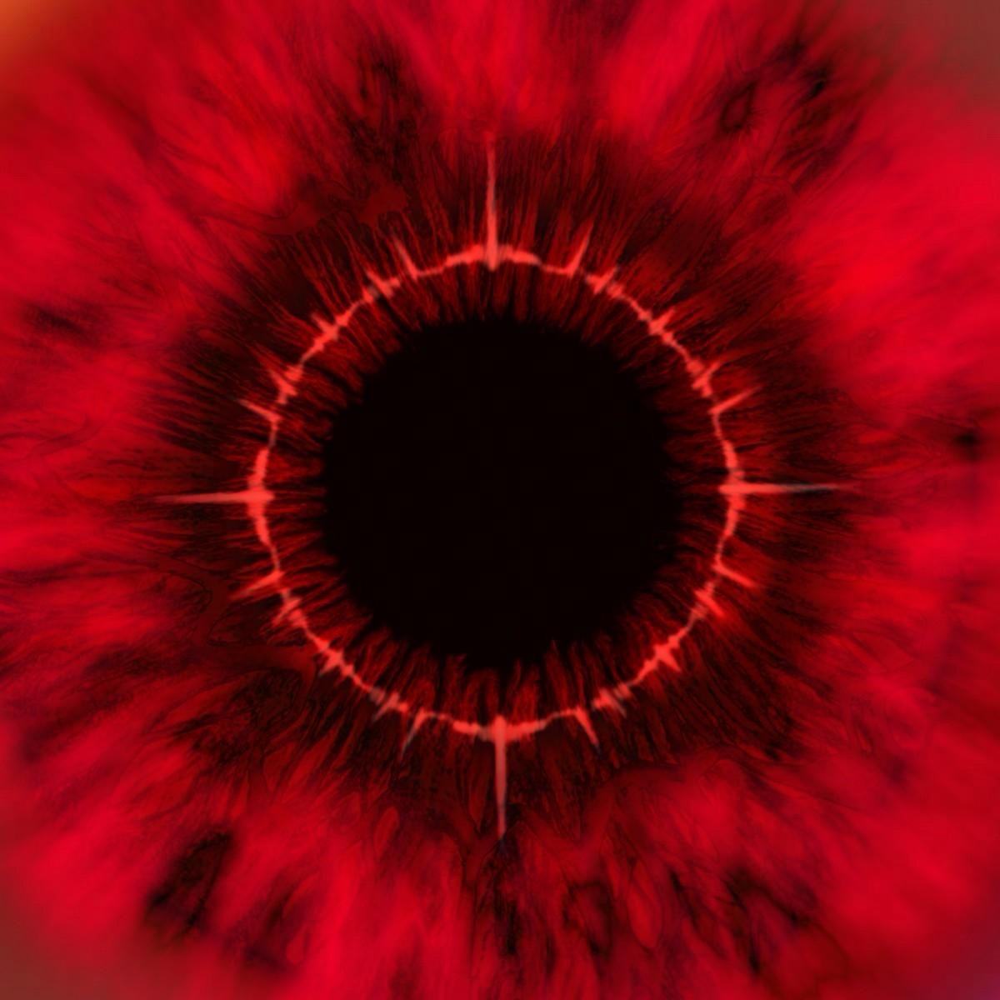

Story Shop, Part Two
2024
TRACKLIST
Disc 01
- Please Don't Go
- Grey
- Power Outage
- Blurred Loneliness
- Candy
- Liar
- I Never Thought You'd Leave
- What Happened
Disc 02
- Please Don't Go (Instrumental)
- Grey (Instrumental)
- Power Outage (Instrumental)
- Liar (Instrumental)
- I Never Thought You'd Leave (Instrumental)
- What Happened (Instrumental)
Disc 03
- Voice Memo: Longing
- Voice Memo: Rogue 1
- Voice Memo: Rogue 2
- Voice Memo: Waiting for Winter Again
- Voice Memo: Romance Beneath the Milky Way — Verse 1
- Voice Memo: Romance Beneath the Milky Way — Verse 2
- Voice Memo: Shadow
- Voice Memo: Grey
- Voice Memo: What Happened
INTRODUCTION
On 13 February 2022, with the release of “Dear,” my first solo album project, Story Shop, began its long journey…
Over the past two years, I have taken Story Shop to dozens of cities across China. As I sang these stories to you, I was also collecting stories and remembering faces. Countless emotions, experiences, uncertainties and reflections became part of the creative process, allowing me to immerse myself more deeply in thought and connect with your stories—and my own.
Today, Story Shop, Part Two is officially released, bringing my first solo double album, Story Shop, to its conclusion. Yet we have only just finished telling the first chapter. What comes next is still ours to write, slowly, together…
ACKNOWLEDGEMENTS
My thanks to every artist who contributed to this album:
Wang Zi, DiESi, Nick Zeng Lingwei, Huang Lige, Zheng Runze, Pu Sang Song Sunny, A Lie, Miao Baisong, Zhou Tianche, Chen Qiyuan, BINGO, Tim Jiang Haotian, Tan Yutang, Derrick Sepnio, He Shan, Hu Jingcheng, Wang Xiaosi, International Philharmonic Orchestra, Gao Xu, kKzk Zhao Ke, Liu Haikuan, Li Yanchao, Li Yang 55TEC, Jay wang, Richard Furch, Domenic Tenaglia, Mike Bozzi, Scott Stratton, Chen Yingkun, Ye Qionglin, Mu Tang Chun and Zhang Dongxing…
Names are listed in no particular order.
They gathered my ideas and helped bring them to life, supporting me behind the scenes and ensuring that every note carried emotion.
All for love.
VOICE MEMOS
At the end of the album, I have prepared a gift for everyone: musical memories and moments of inspiration from the creative process, shared as bonus material.
Perhaps “gift” is not quite the right word. These moments are exchanges between you and me, woven from countless emotions. I hope they offer a glimpse of the small joys and intertwined reflections that have accompanied Story Shop along the way.